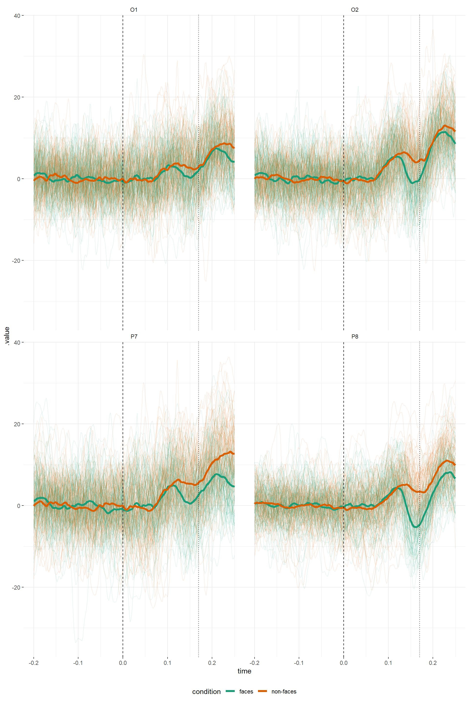
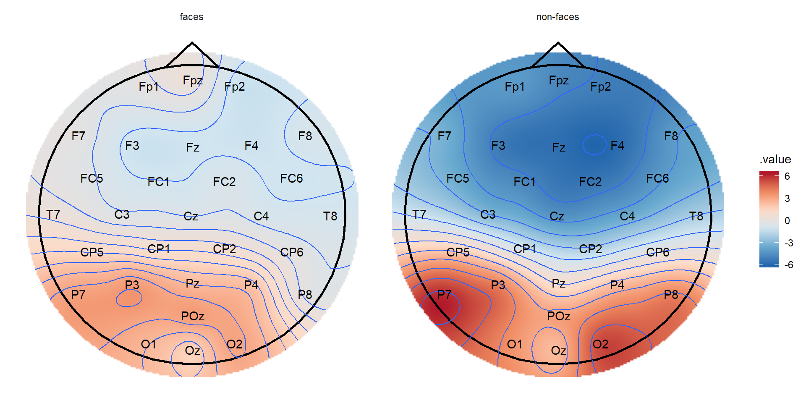

Overview
A package for flexible manipulation of EEG data. eeguana provides a data.table powered framework for manipulating EEG data with dplyr-based functions (e.g., mutate, filter, summarize) extended to a new class eeg_lst, other EEG-specialized functions, and ggplot wrapper functions. The new class is inspired by tidyverse principles but it’s not really “tidy” (due to space considerations), it’s a list of (i) a wide data table (signal_tbl) that contains the signal amplitudes at every sample point of the EEG, (ii) an events data table with information about markers (or triggers), blinks and other exported information, and (iii) a long table with experimental information, such as participant number (recording), conditions, etc.
eeguana cannot do much pre-processing for now, but I plan to incorporate pre-processing functions with time, and thus it is meant to be used on EEG files where filtering, artifact rejection, ICA, etc have already been done.
See Reference for more information about the functions of eeguana.
Installation
There is still no released version of eeguana. The package is in the early stages of development, and it will be subject to a lot of changes. To install the latest version from github use:
Example
Here, I exemplify the use of eeguana with (pre-processed) EEG data from BrainVision 2.0. The data belong to a simple experiment where a participant was presented 100 faces and 100 assorted images in random order. The task of the experiment was to mentally count the number of faces.
First we download the data:
download.file("https://www.ling.uni-potsdam.de/~nicenboim/files/faces.vhdr",
"faces.vhdr", mode="wb")
download.file("https://www.ling.uni-potsdam.de/~nicenboim/files/faces.vmrk",
"faces.vmrk", mode="wb")
download.file("https://www.ling.uni-potsdam.de/~nicenboim/files/faces.dat",
"faces.dat", mode="wb")BrainVision 2.0 exports three files: faces.vhdr, faces.vmrk, and faces.dat. The file faces.vhdr contains the metadata and links to the other two files, faces.vmrk contains the triggers and other events in the samples, and faces.dat contains the signals at every sample for every channel recorded.
We first need to read the data:
faces <- read_vhdr("faces.vhdr")
#> # Data from faces.dat was read.
#> # Data from 1 segment(s) and 34 channels was loaded.
#> # Object size in memory 140.5 MbThe function read_vhdr() creates a list with data frames for the signal, events, segments information, and incorporates in its attributes generic EEG information.
faces
#> $signal
#> .id .sample_id Fp1 Fpz Fp2 F7
#> 1: 1 1 -4.270188 -12.496757 -8.512611 5.8104863
#> 2: 1 2 -5.986778 -11.261559 -8.302858 4.4670320
#> 3: 1 3 -6.580773 -9.333183 -7.679757 3.7081127
#> 4: 1 4 -5.896090 -6.184696 -6.079263 3.9488502
#> 5: 1 5 -5.349657 -2.581047 -3.960115 4.6228004
#> ---
#> 525203: 1 525203 -19.180754 -14.482754 -11.880928 -3.0353870
#> 525204: 1 525204 -14.669420 -10.800195 -7.822333 -0.2864416
#> 525205: 1 525205 -10.086312 -7.376223 -4.007497 2.3745189
#> 525206: 1 525206 -5.963717 -6.318047 -2.550068 4.0785899
#> 525207: 1 525207 -2.811746 -9.569276 -5.257495 3.9431772
#> F3 Fz F4 F8 FC5 FC1
#> 1: 0.7987084 -3.7944875 -7.004565 -9.5905457 -5.5008502 -1.040939
#> 2: -0.4558482 -3.9204431 -7.312232 -10.1968956 -8.2559958 -1.625572
#> 3: -1.8434987 -3.6854007 -7.325179 -10.5801353 -8.9441166 -2.496611
#> 4: -2.6274934 -2.2696950 -6.544898 -10.5005941 -5.3551817 -3.275798
#> 5: -2.9634132 -0.1724038 -5.449733 -10.2940083 -0.5347631 -3.816769
#> ---
#> 525203: -3.5060143 -5.1268702 -3.885933 1.3387113 -6.0354300 -3.429955
#> 525204: -2.9062314 -4.6610451 -3.474034 0.5267539 -5.6796050 -3.269526
#> 525205: -2.2934551 -3.9615459 -2.554780 -0.1948199 -5.2791243 -2.709156
#> 525206: -2.8591332 -4.5113835 -2.396278 -0.8776174 -5.5155010 -2.732390
#> 525207: -4.7773180 -7.2133980 -4.015337 -1.6118808 -7.1379128 -3.719297
#> FC2 FC6 M1 T7 C3 Cz
#> 1: -5.750594 -9.455340 3.2116241 -2.5749669 -3.198639 -7.162738
#> 2: -6.205832 -9.701509 1.5566816 -2.1688442 -3.223826 -7.327467
#> 3: -6.225702 -9.615817 0.4754019 -1.5235398 -4.196370 -7.618096
#> 4: -5.792281 -8.781445 -0.3485098 -0.1197605 -6.155464 -7.683692
#> 5: -5.539208 -7.758235 -1.6416440 1.5852079 -8.072474 -7.589663
#> ---
#> 525203: -1.821500 -1.574225 -3.9028225 -9.0984344 -2.281207 -1.244156
#> 525204: -1.967095 -2.711437 -1.4479842 -8.1386690 -1.984105 -1.888554
#> 525205: -1.333362 -3.477794 0.6584158 -7.0688133 -1.378137 -2.078016
#> 525206: -1.006990 -4.265026 2.0143995 -6.4578338 -1.488095 -2.738976
#> 525207: -1.199275 -6.290535 3.4945364 -7.3460751 -2.911523 -4.274473
#> C4 T8 M2 CP5 CP1 CP2
#> 1: -6.0244598 -4.771918 -3.2116241 -6.062939 -4.813977 -5.0018249
#> 2: -4.7359419 -3.939853 -1.5566816 -5.505422 -4.283286 -3.9824409
#> 3: -3.2705278 -3.285263 -0.4754019 -5.300730 -4.089828 -2.8778281
#> 4: -1.2953618 -2.399213 0.3485098 -5.378413 -4.206456 -1.4029371
#> 5: 0.9121451 -1.056782 1.6416440 -5.488734 -4.434868 0.3268354
#> ---
#> 525203: -2.6202018 -3.093663 3.9028225 -8.155416 -3.549603 -3.7856157
#> 525204: -3.1423230 -2.935883 1.4479842 -6.898589 -3.393985 -4.0930557
#> 525205: -2.8522072 -3.875237 -0.6584158 -5.362293 -2.832092 -3.8660426
#> 525206: -3.3436871 -4.052106 -2.0143995 -4.340692 -2.890889 -4.3359194
#> 525207: -5.8495107 -4.504183 -3.4945364 -4.906254 -4.134459 -6.3578181
#> CP6 P7 P3 Pz P4 P8
#> 1: -8.6002913 -6.72501945 -7.823194 -9.713374 -10.933434 -4.1939182
#> 2: -6.4684544 -4.19162369 -6.248482 -8.652735 -8.811299 -2.4914169
#> 3: -4.4623995 -1.97165060 -4.997821 -7.685406 -6.668526 -1.0310369
#> 4: -2.4144411 -0.09873655 -3.947244 -6.593503 -4.320339 0.6503686
#> 5: -0.1063155 1.68736827 -2.843956 -5.372189 -1.687156 2.8481901
#> ---
#> 525203: -1.9837997 -17.43293571 -7.778884 -3.405085 -1.660518 -4.3979721
#> 525204: -3.5452051 -14.93541336 -6.817270 -4.063128 -2.827326 -5.3324118
#> 525205: -4.0679202 -12.36065578 -5.574656 -4.185033 -3.481713 -6.1155925
#> 525206: -4.9113569 -10.60478783 -5.109689 -4.693735 -4.598518 -7.1271410
#> 525207: -7.4022784 -11.30642700 -6.548401 -6.205623 -6.893994 -9.2952871
#> POz O1 Oz O2 EOGV EOGH
#> 1: -13.021215 -7.650791 -8.6958437 -8.901768 36.3205566 20.61859
#> 2: -10.943350 -3.840688 -5.8336391 -6.211349 39.7541809 25.55089
#> 3: -8.963390 -0.550869 -3.2353799 -3.810405 42.1534882 29.02995
#> 4: -6.857091 2.178792 -0.7047617 -1.321697 44.8317413 30.14127
#> 5: -4.618455 4.996092 2.2072635 1.650699 49.1988983 29.85255
#> ---
#> 525203: -7.370723 -17.387997 -13.6087084 -10.443031 0.8650103 -12.82597
#> 525204: -7.889754 -15.422725 -14.4835081 -12.536522 -0.9290609 -14.95488
#> 525205: -7.927995 -13.746743 -15.2129507 -14.059873 -1.9016356 -14.81808
#> 525206: -8.352034 -13.172369 -16.1580162 -15.562737 -3.9798355 -12.73059
#> 525207: -9.975165 -14.335607 -17.8692055 -17.643250 -9.1380615 -12.55048
#>
#> $events
#> .id type description .sample_0 .size .channel
#> 1: 1 New Segment 1 1 <NA>
#> 2: 1 Bad Interval Bad Min-Max 2158 738 Fp1
#> 3: 1 Bad Interval Bad Min-Max 2161 731 Fp2
#> 4: 1 Bad Interval Bad Min-Max 2162 729 Fpz
#> 5: 1 Bad Interval Bad Min-Max 2173 689 F8
#> ---
#> 4272: 1 Bad Interval Bad Min-Max 524692 204 P8
#> 4273: 1 Bad Interval Bad Min-Max 524725 268 FC5
#> 4274: 1 Bad Interval Bad Min-Max 524777 346 P7
#> 4275: 1 Bad Interval Bad Min-Max 524983 173 Cz
#> 4276: 1 Bad Interval Bad Min-Max 525073 135 O2
#>
#> $segments
#> # A tibble: 1 x 3
#> .id recording segment
#> <int> <chr> <int>
#> 1 1 faces.vhdr 1
#>
#> attr(,"class")
#> [1] "eeg_lst"
#> attr(,"vars")
#> character(0)Some intervals were marked as “bad” by BrainVision, and so we’ll remove them from the data. We’ll also segment and baseline the data. In this experiment, the trigger “s70” was used for faces and “s71” for no faces. We’ll segment the data using these two triggers.
faces_segs <- faces %>%
eeg_segment(description %in% c("s70", "s71"),
lim = c(-.2,.25)) %>%
eeg_intervals_to_NA(type == "Bad Interval") %>%
ch_baseline()
#> # Total of 200 segments found.
#> # Object size in memory 12.2 Mb after segmentation.We can also edit the segmentation information and add more descriptive labels. eeguana has wrappers for many dplyr commands for the EEG data. These commands always return an entire eeg_lst object so that they can be piped using magrittr’s pipe, %>%.
faces_segs_some <- faces_segs %>%
mutate(condition =
if_else(description == "s70", "faces", "non-faces")) %>%
select(-type)
faces_segs_some
#> $signal
#> .id .sample_id Fp1 Fpz Fp2 F7 F3
#> 1: 1 -99 3.000602 3.822540 1.676837 5.345215 8.526904
#> 2: 1 -98 4.651500 5.966759 2.899244 6.229248 11.957867
#> 3: 1 -97 5.636973 7.734169 3.360790 6.146507 12.643122
#> 4: 1 -96 4.887103 7.093736 1.560090 4.679008 10.153717
#> 5: 1 -95 1.679875 3.586631 -2.115480 1.817395 6.471601
#> ---
#> 45196: 200 122 NA NA NA -6.226833 -6.164627
#> 45197: 200 123 NA NA NA -7.609634 -6.624886
#> 45198: 200 124 NA NA NA -8.355278 -7.320350
#> 45199: 200 125 NA NA NA -8.419843 -8.317026
#> 45200: 200 126 NA NA NA -8.219583 -9.290400
#> Fz F4 F8 FC5 FC1 FC2
#> 1: 4.730365 3.188497 -0.1089175 -3.644006 7.912477 3.989274
#> 2: 6.160355 3.994015 -0.8760965 1.023301 9.416551 4.667467
#> 3: 7.125668 4.267825 -2.2046354 7.279726 9.103708 5.293130
#> 4: 6.335395 3.259394 -3.9267309 10.369022 7.112526 4.947480
#> 5: 4.633891 1.394350 -5.1243312 10.296667 4.968021 4.046026
#> ---
#> 45196: -8.134506 -6.909568 -0.8537389 -9.798989 -7.777216 -9.401660
#> 45197: -8.577490 -7.793821 -0.9486715 -10.705381 -8.119785 -9.315678
#> 45198: -8.860150 -8.050289 -0.5816752 -11.125468 -8.373542 -9.178003
#> 45199: -9.056007 -7.632708 0.1328152 -10.956071 -8.740564 -9.007817
#> 45200: -9.426888 -7.286663 0.5260323 -10.897510 -9.636951 -8.939460
#> FC6 M1 T7 C3 Cz C4
#> 1: 1.272626 0.2677516 -3.057617 10.609308 5.917813 0.8313377
#> 2: 3.301379 -0.2832003 -1.562383 12.928541 6.262912 1.0666051
#> 3: 3.712586 -0.7368386 1.504318 11.542353 5.948693 1.9167381
#> 4: 1.836436 -0.8240938 5.022166 7.915255 4.986212 2.8912187
#> 5: -1.199115 -0.6874469 6.427537 4.484360 4.172830 3.3982225
#> ---
#> 45196: -6.067313 -6.4766435 -8.022766 -6.429070 -10.872999 -8.3944751
#> 45197: -7.353704 -6.6995262 -8.829075 -7.358996 -10.609312 -9.2848460
#> 45198: -8.296130 -6.9813064 -9.287003 -8.015747 -10.252135 -9.7955848
#> 45199: -8.350711 -7.0623969 -9.304779 -8.464732 -9.964297 -9.9221298
#> 45200: -7.994563 -7.0156692 -9.483838 -9.494273 -10.028708 -10.5967504
#> T8 M2 CP5 CP1 CP2 CP6
#> 1: -10.315272 -0.2677516 1.964691 6.7162759 3.262704 -7.399092
#> 2: -10.356676 0.2832003 4.404590 7.4449489 3.293858 -5.744716
#> 3: -11.298820 0.7368386 5.582302 7.1147640 3.475278 -3.493423
#> 4: -11.997029 0.8240938 5.430152 6.1576960 3.890801 -1.759528
#> 5: -12.559875 0.6874469 4.314408 5.2338812 4.307086 -1.050894
#> ---
#> 45196: -3.502227 6.4766435 -1.349851 -0.4762376 -5.722418 -3.533263
#> 45197: -4.407707 6.6995262 -3.101862 -1.1596463 -6.534246 -4.621159
#> 45198: -4.839347 6.9813064 -4.486185 -1.7303489 -6.932361 -5.494592
#> 45199: -4.811365 7.0623969 -5.391058 -2.1837558 -7.031692 -6.007089
#> 45200: -4.864176 7.0156692 -6.672053 -3.0703575 -7.622055 -6.492426
#> P7 P3 Pz P4 P8 POz
#> 1: -5.496809 2.0440808 4.166571 -0.0616881 -8.3880332 -0.3286116
#> 2: -2.861829 3.2697255 4.204710 0.5590584 -6.7958000 0.3093608
#> 3: 1.280905 4.4449736 4.435450 1.7226454 -4.7219687 1.9620757
#> 4: 5.945641 5.2879867 4.639458 2.7629569 -3.0705338 3.7967925
#> 5: 8.049101 5.4885453 4.919482 3.4599713 -1.9033555 5.3241937
#> ---
#> 45196: 2.242977 0.7155832 -4.610498 -3.9528958 1.4214111 -4.3255999
#> 45197: -0.126445 -0.6689793 -5.037940 -4.7200541 0.7046986 -4.7982240
#> 45198: -2.238547 -1.8152691 -5.363847 -5.5482372 -0.2055778 -5.3792999
#> 45199: -3.761132 -2.4688984 -5.509579 -6.1985716 -1.2616262 -5.9168708
#> 45200: -5.677335 -3.4514109 -5.946858 -6.8952164 -1.9542868 -6.5737116
#> O1 Oz O2 EOGV EOGH
#> 1: -6.0260374 -5.461096 -4.2778666 6.783448 2.078419
#> 2: -2.6993167 -2.760820 -2.2311228 6.625389 4.423636
#> 3: 1.8627557 1.137758 0.7749981 7.371072 6.663611
#> 4: 5.8118551 4.439274 3.4188545 9.326947 8.364970
#> 5: 8.0964449 6.621065 5.8291734 11.692706 9.205865
#> ---
#> 45196: -0.5402464 -4.114951 -0.3463787 -8.905102 18.196424
#> 45197: -0.8443795 -3.887248 -0.4495586 -9.181591 17.637968
#> 45198: -2.0916432 -4.558462 -1.1659049 -8.742321 17.773702
#> 45199: -4.1249534 -6.119560 -2.5120736 -9.108685 17.002721
#> 45200: -6.4350015 -7.568655 -3.5681661 -10.735058 15.214422
#>
#> $events
#> .id type description .sample_0 .size .channel
#> 1: 1 Stimulus s70 1 1 <NA>
#> 2: 2 Stimulus s71 1 1 <NA>
#> 3: 3 Stimulus s71 1 1 <NA>
#> 4: 4 Stimulus s71 1 1 <NA>
#> 5: 5 Stimulus s70 1 1 <NA>
#> ---
#> 196: 196 Stimulus s71 1 1 <NA>
#> 197: 197 Stimulus s70 1 1 <NA>
#> 198: 198 Stimulus s70 1 1 <NA>
#> 199: 199 Stimulus s70 1 1 <NA>
#> 200: 200 Stimulus s70 1 1 <NA>
#>
#> $segments
#> # A tibble: 200 x 5
#> .id recording segment description condition
#> <int> <chr> <int> <chr> <chr>
#> 1 1 faces.vhdr 1 s70 faces
#> 2 2 faces.vhdr 2 s71 non-faces
#> 3 3 faces.vhdr 3 s71 non-faces
#> 4 4 faces.vhdr 4 s71 non-faces
#> 5 5 faces.vhdr 5 s70 faces
#> 6 6 faces.vhdr 6 s71 non-faces
#> 7 7 faces.vhdr 7 s71 non-faces
#> 8 8 faces.vhdr 8 s70 faces
#> 9 9 faces.vhdr 9 s70 faces
#> 10 10 faces.vhdr 10 s70 faces
#> # … with 190 more rows
#>
#> attr(,"class")
#> [1] "eeg_lst"
#> attr(,"vars")
#> character(0)With some “regular” ggplot skills, we can create customized plots. plot_gg() downsamples the signals (by default), and converts them to a long-format data frame that is feed into ggplot object. This object can then be customized.
faces_segs_some %>%
select(O1, O2, P7, P8) %>%
plot_gg() +
geom_line(alpha = .1, aes(group = .id, color = condition)) +
stat_summary(fun.y = "mean", geom ="line", alpha = 1, size = 1.5,
aes(color = condition)) +
facet_wrap(~ .source) +
geom_vline(xintercept = 0, linetype = "dashed") +
geom_vline(xintercept = .17, linetype = "dotted") +
theme(legend.position = "bottom") 
Another possibility is to create a topographic plot of the two conditions, by first making segments that include only the interval .1-.2 s after the onset of the stimuli, creating a table with interpolated amplitudes and using the ggplot wrapper plot_topo.
faces_segs_some %>% filter(between(as_time(.sample_id, unit = "milliseconds"),100,200)) %>%
group_by(condition) %>%
summarize_all_ch(mean, na.rm = TRUE) %>%
plot_topo() +
annotate_head() +
geom_contour() +
geom_text(colour = "black") +
facet_grid(~condition)